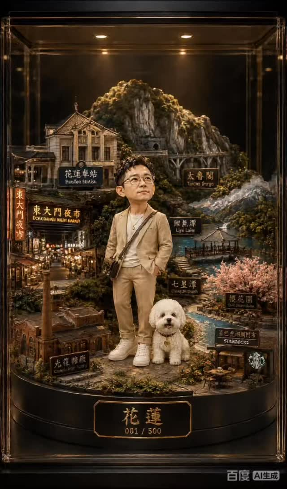
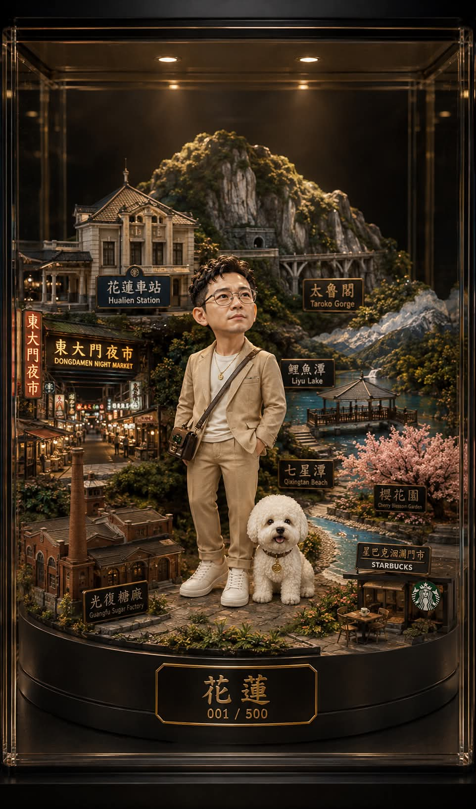

吳平昌 Threads｜花蓮皮克斯風收藏人偶：臉部身份保留與地方場景 prompt

為什麼保存
這則 Threads 是一個完整度很高的「真人照片 → 地方主題收藏人偶」prompt case：它不只是要求 Q 版或 Pixar 風，而是把臉部身份保留、材質、燈光、底座、場景、品牌展示語言與 negative prompt 全部寫進同一套咒語。
對 AI 學習雷達來說，它適合作為三類教學素材：
- 人物參考圖的身份保留 prompt 如何寫得更具體。
- 地方文化 / 地標元素如何轉成可展示的收藏品場景。
- 為什麼「保留臉」與「風格化」本身存在張力，不能把 prompt 當成 100% 保證。
Threads 可見內容
- 作者：吳平昌（@edwupc）。
- Canonical：`https://www.threads.com/@edwupc/post/DbiDHSXFMHk`。
- 擷取時可見：約 277 次瀏覽。
- 標籤：#ChatGPT、#文心、#tiktok。
- 主題：以「花蓮」為底文與場景控制，生成一位 Q 版亞洲男性、白色比熊犬、博物館展示櫃與地方場景底座。
- 主圖與 carousel 第二張已本地保存；完整影片/輪播未登入環境只能以可見封面與 metadata 判讀。

公開 prompt 保存
```text
（絕對臉部身份保留：2.0），
（僅使用上傳的圖片作為臉部參考：2.0），
（同一人，臉部特徵完全相同，不改變臉部：2.0），
保留原始臉部結構、頭骨形狀、比例、眼睛、鼻子、嘴唇、膚色、髮型、年齡、微表情和個性，
嚴格鎖定身份，零偏差，
無美化，無風格化偏移，無AI換臉，無身分更改，
無平滑濾鏡，無美膚效果，
--------------------------------
風格：皮克斯風格收藏人偶（逼真高級混合），非卡通風格，非玩具風格，超精細，傑作，8K，HDR，虛幻引擎5，Octane渲染，真實材質響應：次表面散射皮膚、微小毛孔、逼真的粗糙度貼圖、精細的髮絲渲染。
--------------------------------
臉部優先權：臉部必須與參考圖完全一致，眼距、鼻寬、唇厚必須維持不變，不得改變比例；相機對焦優先：臉部優先，景深由臉部向外遞減。
--------------------------------
角色：Q版亞洲男性（輕微風格化），頭部比例最大 1.15 倍，自然姿態、放鬆站姿、優雅沉穩；表情是自然淡雅的微笑，不誇張。皮膚要有逼真人類皮膚紋理，略帶半透明，無蠟、無塑膠質感。毛髮短而柔軟蓬鬆，自然隨機，無頭盔式髮型。
--------------------------------
狗狗：白色比熊犬，超逼真的毛髮層次，清晰可見的毛髮分離，自然柔軟度的變化，無玩具式簡化。
--------------------------------
服裝：奢華簡約風（銀座/青山），黑色、米色、大地色調；布料具有自然垂墜感、重力反應、精細紡織紋理。Amis 幾何圖案非常微妙、幾乎隱形；配件包含霧面皮革斜背包、乾淨非光澤白色運動鞋、低反光極簡金色點綴。
--------------------------------
構圖：以單一主角為主導，角色佔畫面 40%-50%，背景元素僅為輔助；清晰景深層次：前景 / 主體 / 背景。
--------------------------------
場景底座：優質圓形底座，完美對稱，霧面樹脂 + 微雕細節，所有元素穩固固定，無懸浮感、無視覺干擾。
--------------------------------
場景控制：花蓮車站、東大門夜市、太魯閣山景、鯉魚潭、光復糖廠、七星潭海岸、櫻花花園、星巴克洄瀾門市咖啡館。
--------------------------------
燈光：主光為柔和的金色陽光（45°角）；頂部聚光燈為柔和博物館光束；輔助光為非常柔和的反射光；陰影柔和且電影感十足，不生硬。
--------------------------------
展示方式：博物館玻璃展示櫃內，深色漸層背景（黑色→炭灰色），奢華品牌視覺語言（愛馬仕 / 迪奧展示風格）。底文「花蓮」燙金、清晰雕刻，編號 001 / 500。
--------------------------------
相機：85mm 微距鏡頭，f/1.8 淺景深，對焦鎖定在眼睛上，產品攝影標準，中央重點構圖。
--------------------------------
底片 / negative prompt：無其他人物、無雜物、無雜物背景、無塑膠感、無過度銳化、無 HDR 過度、無臉部畸變、無對稱錯誤、無頭部變形、相機對焦優先臉部、無過度細節雜訊、無微細節誇張、無人工銳利邊緣、無不自然膚色對比度、無紋理過度擬合、無光線不一致。
```
Prompt 結構拆解
| 模組 | 作用 |
|---|---|
| 臉部身份保留 | 用權重與重複約束要求保留臉部結構、五官比例、膚色、年齡與微表情 |
| 風格目標 | 皮克斯風收藏人偶，但又要求「逼真高級混合、非玩具感」 |
| 材質控制 | 次表面散射皮膚、毛孔、粗糙度貼圖、髮絲渲染、霧面樹脂底座 |
| 角色設定 | Q 版亞洲男性 + 白色比熊犬 + 奢華簡約服裝 |
| 地方場景 | 花蓮車站、東大門夜市、太魯閣、鯉魚潭、七星潭、光復糖廠等 |
| 展示語言 | 博物館玻璃展示櫃、深色漸層背景、燙金「花蓮」、限量編號 |
| Negative prompt | 避免改臉、塑膠感、過度銳化、HDR 過度、對稱錯誤、背景雜物 |
官方能力邊界查核
OpenAI 官方資料可支撐「上傳/參考圖片後，以自然語言生成或編輯影像」這個方向：ChatGPT Images Help 說明可上傳既有圖片並描述想改的內容；OpenAI Images API guide 與 Images edit API 也說明 GPT Image 模型支援 image editing 與 reference/input image。
但這則 Threads 沒有提供實際使用的模型版本、文心版本、參數、失敗重試次數或 seed。因此本文把它歸檔為「社群 prompt 案例」，不是任何工具對臉部 100% 保留、8K、HDR、Octane、UE5 等輸出能力的官方保證。
對欒帥可用的改寫方向
若要用於課程或品牌案例，可把這套 prompt 改成模板：
```text
主題城市：{城市/地點}
人物參考：{上傳照片}
動物/陪伴物：{寵物或代表物}
地方場景：{3-8 個地標}
底座文字：{城市名或活動名}
展示風格：{博物館 / 奢侈品牌櫥窗 / 公仔盒}
臉部保留強度：高，但標註為 AI 生成，避免冒充真人照片
```
也可以把「花蓮」替換成課程地點、校園、城市旅遊、品牌活動或學員專屬紀念物，做成個人化 AI 圖像作業。
風險與限制
- 肖像同意：使用真人照片前應取得本人同意，尤其是學生、客戶、未成年人或公開活動照。
- 身份保留不是保證：prompt 寫得再強，模型仍可能改臉、變年輕、變瘦、美化膚色或改變五官比例。
- 深偽與冒用：越強調臉部一致，越需要避免被用來冒充本人或製造誤導性圖片。
- 地方文化元素：Amis 圖案、花蓮地標與原民文化符號若用於商業周邊，需注意脈絡、尊重與授權。
- 品牌語彙：使用「愛馬仕/迪奧展示風格」可作為視覺參考，但商用輸出應避免造成品牌背書或商標混淆。
- 雲端隱私：把人像上傳 ChatGPT、文心或其他工具前，要確認資料使用設定與平台條款。
相關連結
- Threads 原文：https://www.threads.com/@edwupc/post/DbiDHSXFMHk
- ChatGPT Images Help：https://help.openai.com/en/articles/9055440-editing-your-images-with-chatgpt-images
- OpenAI Images API guide：https://developers.openai.com/api/docs/guides/image-generation